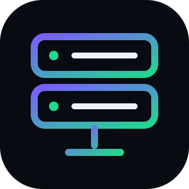

DOBERTO HOST
Plateforme Node.js auto-hébergée conçue pour vendre, provisionner et administrer des serveurs de bots via Pterodactyl. Elle réunit inscription client, offres Starter / Pro / Ultra, commandes avec validation manuelle, tableau de bord administrateur et création automatique des utilisateurs et serveurs après approbation.
Le backend conserve les clés Pterodactyl côté serveur, fournit les données de ressources en direct et permet aux clients de démarrer, arrêter ou redémarrer leurs serveurs sans exposer les secrets d’infrastructure. La persistance SQLite convient au lancement et l’architecture prévoit une migration PostgreSQL pour une montée en charge.